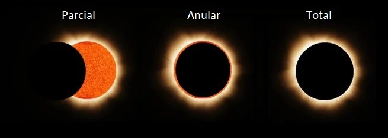

Las Estrellas
Probablemente las estrellas no parezcan tan impresionantes, parecen ser solo unos puntos luminosos que adornan nuestro cielo nocturno que desde hace miles de años han sido observados por nuestros antepasados quienes les dieron nombres y hasta formaron figuras imaginarias con ellas, pero en realidad son mucho más que eso, las estrellas no son más que "soles", al igual que el Sol, que se encuentran a distancias tan impresionantes que apenas podemos verlos como esos pequeños puntos luminosos, a veces blancos, azules o incluso naranja o rojo, colores que se deben a su composición y edad.
1. El Sol
El Sol es la estrella más cercana a nosotros, se encuentra apenas a unos 8 minutos luz o bien, a 1 Unidad Astronómica, distancia que equivale a unos 149 millones de kilómetros (149,000,000 km), mismos que la luz tarda en recorrer aproximadamente 8 minutos, por eso se dice que está a 8 minutos luz.
Como todas las estrellas, el Sol es un objeto enorme, es tan grande y masivo que representa el 99.8% de toda la masa del Sistema Solar, si lo comparamos con nuestro planeta, aunque la Tierra nos parezca muy grande cambrían casi 1 millón 300 mil Tierras en él, eso si de volúmen se trata, pero si solo comparamos su diámetro con el de la Tierra, el diámetro del Sol es de aproximadamente de 1,391,016 km mientras que el de la Tierra es de 12,742 km, eso quiere decir que de lado a lado, la Tierra cabría unas 109 veces en el Sol, como puedes darte cuenta el Sol es muy grande.
La coincidencia a la que debemos los Eclipses Totales de Sol
A propósito de tamaños y distancias, es gracias a una curiosa coincidencia a la que debemos los eclipses totales de Sol, y esta es precisamente sus tamaños y distancias respecto a la Tierra. ¿Cómo es esto?
En primer lugar, tenemos que el Sol es unas 400 veces más grande que la Luna y al mismo tiempo resulta que el Sol está casi 400 veces más lejos de la Tierra que la Luna. ¿Qué significa esto?
Significa que aunque el Sol es mucho más grande que la Luna, al encontrarse el mismo número de veces que es mayor, más distante, hace que ambos objetos aparenten tener el mismo tamaño y por lo tanto cuando la Luna se interpone entre la Tierra y el Sol, ésta lo cubre en su totalidad provocando el conocido Eclipse Total de Sol,

básicamente la Luna estando más cerca se ve más grande y el Sol estando más lejos se ve más chico, lo suficiente como para que la Luna pueda cubrirlo, claro esto no siempre pasa, tienen que darse todas las condiciones necesarias, la Luna orbita alrededor de la Tierra y no siempre está a la misma distancia del planeta, a veces más cerca a veces más lejos, por ello es que los eclipses de Sol no siempre son "totales", a veces son parciales o anulares.
Considerando el diámetro de la Luna como la unidad:
| Cuerpo | Diámetro | Número de veces |
|---|---|---|
| Luna | 3,476 km | 1 |
| Sol | 1,391,016 km | 400.17 |
| El Sol es 400 veces más grande que la Luna | ||
Considerando la distancia Tierra-Luna como la unidad:
| Cuerpo | Distancia a la Tierra | Número de veces |
|---|---|---|
| Luna | 384,400 km | 1 |
| Sol | 150,000,000 km | 390.18 |
| El Sol está 390 veces más lejos que la Luna | ||
En otras palabras, si el Sol fuera más grande, o la Luna más pequeña, o alguno de los dos se encontrara más lejos, esta coincidencia no se daría y no existirían los eclipses totales de Sol, ya que la Luna se vería más chica y no alcanzaría a cubrir el disco solar.
Edad del Sol
Las estrellas viven literalmente millones de años, se dice que nuestro Sol tiene una edad aproximada de 4,600 millones de años y que por lo menos brillará otro lapso de tiempo igual, es decir, está a la mitad de su ciclo de vida como la mayoría de estrellas en el Universo, a esta etapa se le llama Secuencia Principal, esta es una fase por la que pasan la mayoría de estrellas en la que adoptan una luminosidad amarilla que indica que la estrella consume hidrógeno como combustible principal.
Dado que el Sol, y todas las estrellas son enormes reactores nucleares, deben su calor y luminosidad a la fusión de elementos en su núcleo, en el caso del Sol está fusionando hidrógeno en helio, una vez que se termine el hidrógeno comenzará a fusionar el helio y así sucesivamente en un cliclo de fusión en el que cada vez los elementos resultantes serán más y más pesados, hasta el punto en que éstos no se podrán fusionar más, cuando el Sol llegue a esta etapa expandirá su volumen convirtiéndose en una Gigante Roja, que es un tipo de estrella moribunda, luego consumirá sus elementos restantes perdiendo masa y volumen hasta convertirse en una Enana Blanca, un tipo de estrella que se encuentra en la etapa final de su vida, permanecerá así hasta apagarse por completo, pero para que esto suceda deberán pasar al menos 4 mil millones de años.
2. Próxima Centauri
Luego del Sol, nuestra estrella vecina más cercana es Próxima Centauri o también llamada Alfa Centauri C ya que forma parte de un sistema estelar triple, es decir, un grupo de tres estrellas ligadas gravitatoriamente, es decir, se orbitan entre si y viajan juntas por el espacio.
Como su nombre lo sugiere, los nombres de estas estrellas son: Alfa Centauri A, Alfa Centauri B y Alfa Centauri C, siendo esta última la que por su posición orbital se ubica más próxima a la Tierra, de ahí su nombre Próxima Centauri.
Este sistema estelar se encuentra a unos 4.3 años luz de nuestro Sistema Solar, fuera de nuestro alcance pero muy cercano en comparación con otras estrellas, se compone por dos estrellas principales que son Alfa Centauri A y B, también llamadas Rigil Kentaurus y Toliman respectivamente, siendo la primera de un tamaño muy similar al Sol, solo un 10% más masiva y un 23% más grande, mientras que la segunda es un poco menor, estas dos estrellas se orbitan mútuamente muy cerca entre si, mientras que Próxima Centauri se encuentra más alejada, a unas 15 mil UA y las orbita a ambas, hecho por el cual se convierte en la más cercana, ya que al estar tan separada en algún punto de su órbita se coloca en dirección de nuestro sistema y por lo tanto más cerca de nosotros, es por ello que esta estrella se localiza a unos 4.22 años luz del Sol.
Aunque estas tres estrellas son las más cercanas al Sistema Solar no destacan en el cielo nocturno, ya que a simple vista apenas pueden distinguirse sus dos miembros mayores como un único punto luminoso, mientras que Próxima es imposible de observar ya que su luminosidad es demasiado débil y solo puede verse con ayuda de potentes telescopios.
Ocupando estas tres estrellas el primer lugar entre las más cercanas, la lista de las 10 estrellas más próximas al Sistema Solar es la siguiente.
| Posición | Estrella | Distancia Años Luz | Magnitud Aparente | Visible sin telescopio |
|---|---|---|---|---|
| 1 | Próxima Centauri | 4.22 | 11 | No |
| Alfa Centauri A | 4.36 | -0.01 | Si | |
| Alfa Centauri B | 4.36 | 1.35 | Si | |
| 2 | Estrella de Barnard | 5.96 | 9.53 | No |
| 3 | Luhman 16A | 6.59 | 10.7 | No |
| Luhman 16B | 6.59 | N/D | No | |
| 4 | WISE 0855-0714 | 7.2 | N/D | No |
| 5 | Wolf 359 | 7.78 | 13.44 | No |
| 6 | Lalande 21185 | 8.29 | 7.47 | No |
| 7 | Sirio A | 8.58 | -1.47 | Si |
| Sirio B | 8.58 | 8.44 | No | |
| 8 | Luyten 726-8 B | 8.72 | 12.54 | No |
| Luyten 726-8 A | 8.72 | 12.99 | No | |
| 9 | Ross 154 | 9.68 | 10.43 | No |
| 10 | Ross 248 | 10.32 | 12.29 | No |
Son las más cercanas, pero de esta lista solo las estrellas Alfa Centauri A y B y Sirio A son visibles a simple vista, y de hecho Sirio A es la estrella más brillante del cielo nocturno, y citando a las 10 estrellas más brillantes (más el Sol y la Luna) la lista es la siguiente.
| Posición | Estrella | Magnitud Aparente | Distancia Años Luz |
|---|---|---|---|
| Sol | -26.8 | 8 minutos | |
| Luna llena | -12.6 | 1.2 segundos | |
| 1 | Sirio A | -1.47 | 8.6 |
| 2 | Canopus | -0.72 | 310 |
| 3 | Arturo | -0.05 | 36 |
| 4 | Alfa Centauri A | 0.01 | 4.36 |
| 5 | Vega | 0.03 | 25 |
| 6 | Rigel | 0.12 | 860 |
| 7 | Procyon | 0.34 | 11 |
| 8 | Achernar | 0.5 | 140 |
| 9 | Betelgeuse | 0.58 | 630 |
| 10 | Hadar | 0.6/td> | 397 |
En este caso hay estrellas muy lejanas, como lo son Rigel y Betelgeuse, ambas de la constelación de Orión, que superan los 500 años luz de distancia y a pesar de estar tan lejos figuran entre las 10 estrellas más brillantes, ¿por qué sucede esto?, respuesta simple: porque son enormes.
Por su parte Rigel tiene una masa que equivale a 18 veces la del Sol, es muy grande, tanto que si la colocaramos en el centro del Sistema Solar, su radio llegaría hasta la órbita de Mercurio, de hecho está catalogada como una estrella tipo supergigante, categoría que engloba a las estrellas que comprenden entre 18 y 50 masas solares, así como es tan grande también es extremadamente luminosa, su luminosidad es de unos 85 mil soles por lo que a pesar de la distancia podemos verla tan brillante.
Por otro lado Betelgeuse es tan masiva como Rigel o quizás lo sea aun más, también está catalogada como una supergigante, pero en este caso "roja", lo cual indica que es una estrella moribunda que se encuentra en la etapa final de su vida, aun así, tiene una luminosidad que supera a la del Sol en al menos 100 mil veces y es gracias a ello que se encuentra entre las más brillantes a pesar de su lejanía.
3. Magnitud Aparente y Absoluta
Una de las categorías en las que se puede clasificar a las estrellas es precisamente por su luminosidad, esta se puede medir en dos tipos, la Magnitud Aparente y la Magnitud Absoluta.
Magnitud Aparente
Magnitud Absoluta
4. Evolución Estelar
s ...
Resumen
...